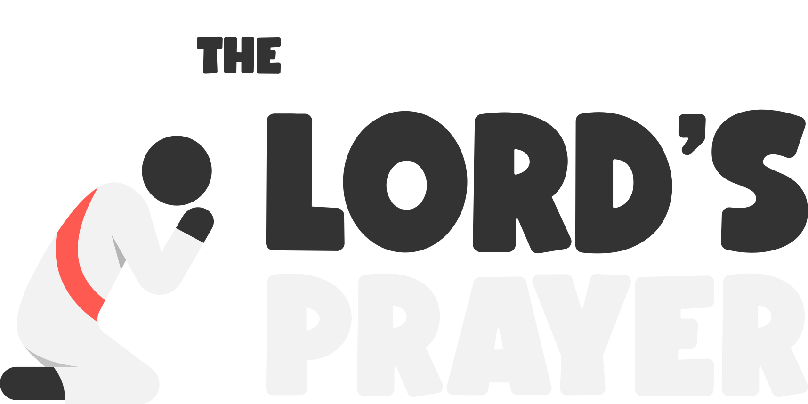

<!DOCTYPE html>
<html lang="en">
<head>
<meta charset="UTF-8" />
<link href="https://fonts.googleapis.com/css2?family=Baloo+2:wght@400;700&display=swap" rel="stylesheet">
<meta name="viewport" content="width=device-width, initial-scale=1.0, maximum-scale=1.0" />
<title>The Lord's Prayer</title>

<!-- PWA -->
<link rel="manifest" href="/eatyourbible/pwa/prayer/manifest.webmanifest">
<meta name="theme-color" content="#7f66c6">

<!-- iOS "Add to Home Screen" -->
<meta name="apple-mobile-web-app-capable" content="yes">
<meta name="apple-mobile-web-app-status-bar-style" content="black-translucent">
<link rel="apple-touch-icon" href="/eatyourbible/pwa/prayer/icons/icon-192.png">

<style>
/* Global box sizing fix */
*, *::before, *::after { box-sizing: border-box; }

html, body {
  margin: 0;
  padding: 0;
  height: 100%;
  overflow: hidden;
  font-family: "Baloo 2", system-ui, -apple-system, BlinkMacSystemFont, sans-serif;
}

#app { position: relative; width: 100%; height: 100%; overflow: hidden; }

/* ---------- Slide System ---------- */
.slide{
  position:absolute;
  width:100%;
  height:100%;
  top:0; left:0;
  display:flex;
  flex-direction:column;
  min-height:0;
  padding-bottom: 0;
}

.slide.nav-hidden{
  padding-bottom: 0;
}

.content{
  height: calc(100% - 70px - env(safe-area-inset-bottom));
  display:flex;
  flex-direction:column;
  min-height:0;
}

.slide.nav-hidden .content{
  height: 100%;
}

.image-area{
  width:100%;
  flex:2;
  display:flex;
  justify-content:center;
  align-items:center;
}

.image-area img{
  max-height:100%;
  max-width: min(90vw, 520px);
  object-fit:contain;
}

.text-area{
  flex:0 0 auto;
  display:flex;
  justify-content:center;
  align-items:center;
  padding: 20px 20px 30px;
  text-align:center;
  min-height:0;
}

.phrase{
  font-family:'Baloo 2', cursive;
  font-size: clamp(24px, 8vw, 100px);
  text-wrap: balance;
  color:white;
  font-weight:700;
  text-shadow:0 2px 6px rgba(0,0,0,0.4);
}

.dark-text{ color:#111; text-shadow:none; }

.small-text{
  font-size: clamp(16px, 3vw, 20px);
  opacity:.85;
  color:white;
  text-wrap: balance;
}

.large-text{
  font-size: clamp(28px, 6vw, 48px);
  color:white;
  font-weight:700;
  text-wrap: balance;
}

/* ---------- Navigation ---------- */
.nav{
  height:70px;
  background: rgba(0,0,0,0.3);
  display:flex;
  justify-content:space-between;
  align-items:center;
  color:white;
  font-size:28px;
  position:fixed;
  left:0; right:0; bottom:0;
  z-index:9999;
  padding: 0 30px calc(env(safe-area-inset-bottom)) 30px;
}

.nav button{
  background:none;
  border:none;
  color:white;
  font-size:28px;
  display:flex;
  align-items:center;
  justify-content:center;
}

.nav-icon{ width:34px; height:34px; display:block; }

.center-btn{ font-size:18px !important; }

/* Pressable white pill buttons for Hint/Dig Deeper */
.nav-pill{
  background:white !important;
  color:#333333 !important;
  border:none;
  border-radius:999px;
  padding:10px 18px;
  font-size:18px;
  font-weight:700;
  box-shadow:0 4px 0 rgba(0,0,0,0.25);
  transition: transform 0.12s ease, box-shadow 0.12s ease;
}

.nav-pill:active{
  transform: translateY(3px);
  box-shadow:0 1px 0 rgba(0,0,0,0.25);
}

/* ---------- Title ---------- */
.title-screen{
  position:relative;
  display:flex;
  flex-direction:column;
  align-items:center;
  height:100%;
  padding:24px 16px;
  padding-bottom:110px;
  background:#7f66c6;
  color:white;
  text-align:center;
}

.title-content{
  flex:1;
  display:flex;
  flex-direction:column;
  justify-content:center;
  align-items:center;
  width:100%;
  max-width:700px;
  padding-bottom:0px;
}

.title-screen h2{
  font-size: clamp(22px, 5.2vw, 44px);
  font-weight:700;
  margin:14px 0 12px;
  text-wrap: balance;
}

.title-screen img{
  width:min(80%, 420px);
  max-height:34vh;
  object-fit:contain;
}

.title-buttons button{
  margin:10px 8px;
  padding:14px 28px;
  font-size:18px;
  font-weight:700;
  border-radius:999px;
  border:none;
  background:white;
  color:#7f66c6;
  box-shadow:0 6px 0 rgba(0,0,0,0.25);
  transition: all 0.15s ease;
}

.title-buttons button:hover{
  transform: translateY(-2px);
  box-shadow:0 8px 0 rgba(0,0,0,0.25);
}

.title-buttons button:active{
  transform: translateY(4px);
  box-shadow:0 2px 0 rgba(0,0,0,0.25);
}

.title-buttons button.carousel-arrow:hover,
.title-buttons button.carousel-arrow:active{
  box-shadow:none;
  transform:none;
}

.learn-btn{ background:white; color:#7f66c6; }
.test-btn{ background:#ffc751; color:#333; }

/* ---------- Title Button Carousel ---------- */
.title-carousel{
  display:flex;
  align-items:center;
  justify-content:center;
  gap:10px;
  width:100%;
}

.title-buttons button.carousel-arrow{
  width:54px;
  height:54px;
  padding:0;
  margin:10px 0;
  border-radius:999px;
  background: rgba(0,0,0,0.30);
  color:white;
  display:flex;
  align-items:center;
  justify-content:center;
  line-height:0;
  font-size:28px;
  font-weight:700;
  box-shadow:none;
  transform:none;
}

.title-buttons button.carousel-main{
  margin:10px 0;
  flex:1;
  min-width:0;
  max-width:420px;
}

.carousel-dots{
  display:flex;
  justify-content:center;
  gap:10px;
  margin-top:6px;
}

.carousel-dot{
  width:10px;
  height:10px;
  border-radius:999px;
  border:2px solid rgba(255,255,255,0.75);
  opacity:0.9;
}

.carousel-dot.active{ background: rgba(255,255,255,0.95); }

/* ---------- Mode Select (title-style buttons) ---------- */
.mode-buttons{
  display:flex;
  flex-direction:column;
  align-items:center;
  width:100%;
  gap:14px;
  margin-top:10px;
}

.mode-buttons button{
  width:min(420px, 92%);
  display:flex;
  flex-direction:column;
  gap:4px;
  line-height:1.1;
}

.mode-buttons .btn-desc{
  font-size:14px;
  font-weight:500;
  opacity:0.85;
}

.hard-btn{ background:#ff5a51; color:white; }

.footer{
  position:absolute;
  left:0; right:0; bottom:0;
  background: rgba(0,0,0,0.30);
  color:white;
  text-align:center;
  padding:12px 16px calc(12px + env(safe-area-inset-bottom));
  font-size:14px;
  line-height:1.2;
  z-index:9999;
}

/* ---------- Intro ---------- */
.intro{
  background:#7f66c6;
  display:flex;
  justify-content:center;
  align-items:center;
  height:100%;
}

.intro img{
  width:60%;
  max-width:400px;
  animation: wiggle 1s infinite alternate;
}

@keyframes wiggle { 0%{transform:rotate(-4deg);} 100%{transform:rotate(4deg);} }

button{ cursor:pointer; font-family:inherit; }

/* Prevent mobile double-tap zoom on specific controls */
.no-zoom{
  touch-action: manipulation;
  -webkit-user-select:none;
  user-select:none;
  -webkit-touch-callout:none;
}

/* ---------- Dig Deeper Overlay ---------- */
.dig-modal{
  position:absolute;
  top:0; left:0; right:0;
  bottom: calc(70px + env(safe-area-inset-bottom));
  z-index: 6000;
  padding: 18px 16px 18px 16px;
}

.dig-modal-inner{
  height:100%;
  width: min(820px, 100%);
  margin: 0 auto;
  border-radius: 24px;
  background: rgba(0,0,0,0.90);
  box-shadow: 0 14px 40px rgba(0,0,0,0.28);
  padding: 18px 16px;
  display:flex;
  flex-direction:column;
  gap: 10px;
}

.dig-modal-title{
  color:white;
  font-weight:700;
  font-size: clamp(18px, 3.8vw, 26px);
  text-shadow:0 2px 6px rgba(0,0,0,0.35);
}

.dig-modal-scroll{
  flex:1;
  min-height:0;
  overflow-y:auto;
  -webkit-overflow-scrolling: touch;

  position: relative;
  padding-bottom: 70px;

  /* Hide scrollbar but keep scrolling */
  scrollbar-width: none;        /* Firefox */
  -ms-overflow-style: none;     /* IE/Edge */
}

.dig-modal-scroll::-webkit-scrollbar{
  display: none;                /* Chrome/Safari */
}

/* Fade overlay that stays pinned to the bottom of the card */
.dig-modal-inner{
  position: relative; /* IMPORTANT: anchors the fade */
}

.dig-fade{
  position:absolute;
  left:16px;
  right:16px;
  bottom:18px;      /* matches .dig-modal-inner padding */
  height:62px;
  pointer-events:none;
  background: linear-gradient(to bottom, rgba(0,0,0,0), rgba(0,0,0,0.90));
}

.dig-p{
  margin: 0 0 24px 0;
  color:white;
  font-size: clamp(16px, 3.6vw, 22px);
  font-weight: 400;
  line-height: 1.55;
  text-shadow:0 2px 6px rgba(0,0,0,0.35);
  text-wrap: pretty;
  text-align: justify;
  hyphens: auto;
  -webkit-hyphens: auto; /* Safari/iOS */
  overflow-wrap: break-word; /* safety for long words */
}

.dig-p strong{
  font-weight: 800;
}


.dig-p strong:first-child{
  font-size: 1.1em;
  letter-spacing: 0.5px;
}

.dig-p em{
  font-style: italic;
  opacity: 0.95;
}

.intro-content{
  display:flex;
  flex-direction:column;
  justify-content:center;
  align-items:center;
  text-align:center;
  height:100%;
  padding:20px;
  gap:20px;
}

.intro-content img{
  width:min(60%, 260px);
  max-height:30vh;
  object-fit:contain;
}

.guide-image-area{
  flex: 0 0 auto;
  display:flex;
  justify-content:center;
  align-items:center;
  padding: 18px 20px 10px;
  min-height:0;
}

.guide-image-area img{
  width:min(56vw, 220px);
  max-height:24vh;
  object-fit:contain;
}

.guide-text-area{
  flex: 0 0 auto;
  display:flex;
  justify-content:center;
  align-items:center;
  padding: 4px 20px 14px;
  text-align:center;
}

.guide-phrase{
  font-family:'Baloo 2', cursive;
  font-size: clamp(18px, 5.8vw, 42px);
  line-height:1.12;
  color:white;
  font-weight:700;
  text-shadow:0 2px 6px rgba(0,0,0,0.35);
  text-wrap: balance;
}

.guide-prompt-wrap{
  flex:1;
  min-height:0;
  display:flex;
  align-items:center;
  justify-content:center;
  padding: 0 16px 18px;
}

.guide-prompt-box{
  width:min(860px, 100%);
  background: rgba(0,0,0,0.30);
  border-radius: 24px;
  padding: 18px 18px 20px;
  box-shadow: 0 8px 20px rgba(0,0,0,0.18);
}

.guide-prompt{
  color:white;
  font-size: clamp(18px, 4.8vw, 30px);
  line-height:1.35;
  text-align:center;
  text-wrap: balance;
}

.guide-instruction{
  color:white;
  font-size: clamp(18px, 4.6vw, 28px);
  line-height:1.35;
  text-align:center;
  text-wrap: balance;
}

.guide-refresh-btn{
  font-size:26px !important;
  line-height:1;
}

</style>
</head>

<body>
<div id="app"></div>
<div id="navBar" class="nav" style="display:none;"></div>

<script>
/* ---------- Data ---------- */
/*
  Edit these later in VS Code:

  - COMMANDMENTS: text + key words (for Test Yourself masking)
  - DIG_DEEPER_TEXT: one long explanation per commandment
*/

const COMMANDMENTS = [
  ["Our Father in heaven,", "Father", "heaven"],
  ["Hallowed be your name,", "Hallowed", "name"],
  ["Your kingdom come,", "kingdom", "come"],
  ["Your will be done, on earth as it is in heaven.", "will", "earth", "heaven"],
  ["Give us today our daily bread.", "bread", "today", "daily"],
  ["And forgive us our debts, as we also have forgiven our debtors.", "forgive", "debts", "debtors"],
  ["And lead us not into temptation, but deliver us from the evil one.", "temptation", "deliver", "evil" ]
];

// One explanation per part of the prayer
// Use \n\n to create paragraph breaks.
const DIG_DEEPER_TEXT = [];


DIG_DEEPER_TEXT[0] = `**Prayer is Talking with God**

Prayer is talking with God. If anyone was ever an expert on prayer, it would be Jesus. One day, after watching him pray, Jesus’ disciples asked him, “Lord, teach us to pray…” (Luke 11:1). After watching the Master at work, they knew there would be no better person in the world to teach them to talk with God than the Son of God himself!

Jesus responded by giving them a prayer to pray. We have a special name for this prayer. It’s called the “Lord’s Prayer” because the Lord Jesus gave it to us. You can read the Lord’s Prayer in a couple places in the Bible. We’ll look at it more closely over the next six questions. That’s because the Lord’s Prayer is made up of six “petitions.” A petition is a word that means “to ask someone in charge to do something for you.” In the Lord's Prayer, Jesus gives us six different petitions—six things we ask the Lord God to do for us.

Before we look at these six petitions, let’s examine how Jesus taught us to start this prayer. In Matthew 6:9, he said, “This, then, is how you should pray: ‘Our Father in heaven...’” There are lots of names the Bible uses for God. He’s the Lord, the Almighty, the King, and the Rock! Any of those names would have been okay for us to use as we start our prayers. But out of all the names in the Bible for our God, Jesus taught us to start our prayers by calling him our “Father in heaven.”

When we pray, Jesus wants us to think of God as a Father—a heavenly Dad who loves us and wants the best for us. That should encourage us when we pray. We aren't talking to someone who's bothered by our requests. We are talking to a Father who cares for his children and loves to hear our prayers!

There are two ways to use the Lord's Prayer to help you talk with God. First, it's perfectly fine to just memorize the words and repeat them back as a prayer to God. However, they aren't magic words. God gave us brains for a reason! It's important to know what in the world we are saying as we pray the words of Jesus’ Prayer.

We can also use the Lord's Prayer as a checklist. The six petitions give us six different types of things to pray for. We can use them like a checklist to remind us of all the different areas of life God wants us to talk with him about. These six different prayer topics will keep us from focusing too much on only one area of life.

The Bible often talks about praying “in Jesus’ name.” We learned that this means praying in his power while asking for things that Jesus would want for us. When we pray the Lord’s Prayer, we can always be certain we are praying in his name. Why? Because it’s the prayer Jesus himself gave us to pray! There’s no doubt—these are the things he wants us to pray about!`;

DIG_DEEPER_TEXT[1] = `**Hallowed Be Your Name**

To teach his disciples how to pray, Jesus gave them the Lord's Prayer. After teaching them to begin by calling God their “Father in heaven,” he gave them six petitions, six things for us to ask God to do. Now it’s time to look at them one by one. Obviously, we’ll start with the first petition: “Hallowed be your name.” (Matt. 6:9)

“Hallowed” is a word you might not have used before. It means “honored, treated as special.” A cemetery (burial ground) for soldiers who died in battle might be called a “hallowed” place. It’s designed to honor those who gave their lives to protect their people. The temple in the Old Testament is another example. It was a gold-covered building where our holy and sinless God met with his sinful people. The Israelites “hallowed” the temple; they treated it as if it was the most special spot on earth… because it was!

In the first petition of the Lord's Prayer, Jesus teaches us to pray that God's name would be hallowed. By praying, “Hallowed be your name,” Jesus is teaching us to pray that people, including us, would give honor and glory and praise to God’s name. And when we give honor to his name, we are actually giving honor to him!

There are many different ways we can hallow and honor God's name. We can sing songs about how great he is. We can tell the true tales of all the amazing things he has done. The book of Psalms is the Bible's songbook. It's filled with poetry and songs that describe the goodness and greatness of our glorious God. Psalm 100:5 gives us a good example of how to hallow God's name: “For the Lord is good and his love endures forever; his faithfulness continues through all generations.” The words of this psalm (song) hallow God’s name—they bring him glory and honor. They demonstrate how awesome and good our great God is!

When you pray, “Hallowed be your name,” understand that you are praying that God would be honored and praised, not just by you, but by everybody. Using this petition like a checklist, you could take time to praise God for the amazing Father he is and the good blessings he has given to you. You could even read words of praise from the Bible book of Psalms in your prayers to him.`;

DIG_DEEPER_TEXT[2] = `**Your Kingdom Come**

The second petition of the Lord's Prayer is “Your kingdom come” (Matt. 6:10). A kingdom refers to the places and people ruled by a king. This petition doesn’t say, “My kingdom come” or “America’s kingdom come” or “Japan’s kingdom come.” In the second petition, we're praying that God's kingdom would come. We’re asking God to spread his rule to more and more people and in more and more places across the globe.

God's heavenly kingdom is quite different from the countries and kingdoms of earth. It doesn't spread by sending its armies to conquer its neighbors with swords and guns. Before Jesus left for heaven, he gave his disciples an order. We call this command the “Great Commission.” And it tells us exactly what King Jesus wants us to do in order to grow God’s kingdom on earth.

Matthew 28:19-20 tells us the words Jesus spoke to his followers: “Therefore go and make disciples of all nations, baptizing them in the name of the Father and of the Son and of the Holy Spirit, and teaching them to obey everything I have commanded you. And surely I am with you always, to the very end of the age.”

Jesus didn’t send out his disciples to conquer the nations of the earth using weapons of war. Instead, he armed them with the good news of the gospel and said, “Go!” God's kingdom spreads when the good news of Jesus is preached to people who’ve never heard in places it’s never been. And it grows one soul at a time when that good news is believed by the sinners who hear it!

Just to refresh your memory, we can read the quick version of the gospel in 1 Corinthians 15:3-4: “Christ died for our sins according to the Scriptures… he was buried… he was raised on the third day…” When a law-breaking sinner repents of their sin and believes the good news, God’s kingdom grows! That sinner is forgiven, justified, adopted, and made a citizen of God’s forever kingdom.

When you pray, “Your kingdom come,” understand that you're asking for God's kingdom to grow as the good news of Jesus is preached and believed by those around us and all over the world. Using the second petition like a checklist, you can pray for those who don't believe in Jesus, asking God to help them believe and join his kingdom. You can also pray that God would help you and other Christians to share the good news with those who still need to hear it. If you belong to a church that supports missionaries around the world, this would be a great time to pray for them!`;

DIG_DEEPER_TEXT[3] = `**Your Will Be Done**

The third petition of the Lord's Prayer is “Your will be done, on earth as it is in heaven.” (Matt. 6:10) A person’s “will” is what they want to be done. For instance, if you said, “Hey, I’m going to the ice cream shop. Want me to get anything for you?” my will would be for you to get me a double scoop of chocolate chip cookie dough in a waffle cone. For my will to be done, you’d need to get me exactly what I asked for. If you came back with a banana split with rainbow sprinkles instead, you would not have done my will—and I probably wouldn’t be too happy about it!

Now, the third petition of the Lord's Prayer is not about my will for ice cream. It's about God's will for how we should live! And we don't have to guess what God's will is for us. It’s no big mystery. God has made his will pretty clear through his God-breathed Word.

The commands we read in our Bibles reveal God's will for our lives. They tell us exactly how he wants us to live. To put it very simply, God's will for us is love! He first wants us to love him with all of our hearts. Along with that, his will for us is to love our neighbors as we love ourselves. If we want more specific examples of how we should love God or love people, we have the Ten Commandments to spell it out for us. They describe ten different ways that we can love God and love people. They show us God’s will for our lives.

But God’s given us much more than just the Ten Commandments to explain how he wants us to live. The Bible is chock full of little bits of God’s will for us. Here are a couple of examples: “Give thanks in all circumstances; for this is God’s will for you in Christ Jesus.” (1 Thes. 5:18) “It is God’s will that you should be sanctified: that you should avoid sexual immorality.” (1 Thes. 4:3)

When you pray, “Your will be done on earth as it is in heaven,” understand that you are asking God to help you and those around you do his will, to do what he wants us to do. We’re asking God to help us obey his commands as closely as the angels obey him in heaven! For an example of how to use the third petition like a checklist, you could go through the Ten Commandments, one at a time, and ask God to help you, your parents, your friends, or anyone else obey them!`;

DIG_DEEPER_TEXT[4] = `**Give Us Our Daily Bread**

The fourth petition is “Give us this day our daily bread.” (Matt. 6:11) The word “daily” means something that happens on Sunday, Monday, Tuesday, Wednesday… are you starting to get the picture? Daily means every single day! But the fourth petition isn’t about asking God to send us a slice of bread to snack on each day. If you were an Israelite back in Jesus’ time, the words “daily bread” would have immediately caused you to think of a famous story from the Old Testament.

Way back in the book of Exodus, about 1,500 years before the time of Jesus, God's people were wandering around in the desert with no food to eat. To save them from starving, God fed them miracle meals of “manna.” This was a special bread that fell from heaven. For 40 years, the Israelites ate this God-given “daily bread.” It was a special sign of how God had the power to take care of the needs of his people.

When Jesus taught his disciples to ask God for their daily bread, he was teaching them to ask for the things our bodies need to be healthy. It’s sort of like saying, “Father, take care of my needs like you took care of the Israelites in the wilderness.” Our needs include things like food, water, a place to live, and medicine. It also includes safety from harm and a job to earn money.

The fourth petition isn’t about praying for stuff we’d like: things like the newest video game, the biggest TV, or a double scoop of chocolate chip cookie dough ice cream in a waffle cone. 1 Timothy 6:7-8 gives us a good example of what asking for our daily bread should be like: “We brought nothing into the world, and we can take nothing out of it. But if we have food and clothing, we will be content with that.”

When you pray, “Give us this day our daily bread,” understand that you are asking God to give you and others what they need for their bodies. Using the fourth petition like a checklist, you could pray for people you know who are sick, others who are struggling with earning enough money to take care of their needs, and for people around the world who don’t have enough food or clean water.`;

DIG_DEEPER_TEXT[5] = `**Forgive Us Our Debts**

The fifth petition of the Lord’s Prayer is “Forgive us our debts, as we have also forgiven our debtors.” (Matt. 6:12) It may seem obvious, but this petition isn’t going to make a lick of sense unless you know what in the world a “debt” and a “debtor” is, so let’s take a quick moment to explain.

Imagine you wanted to buy a gigantic stuffed sloth, but you didn’t have any money. So you borrowed $100 from your sister to pay for it. After buying the sloth, you would now owe your sister $100 and have to eventually pay it back. You would have a debt of $100. So a debt is something that you owe to someone else, usually money. A debtor, then, is a person who has a debt they need to pay back.

In the Bible, Jesus used the idea of owing a debt as a picture to help explain what sin is like. In Matthew 18, he told a story about a servant who owed a fortune to his king. The man’s debt was so enormous, there was no chance he could ever pay it back in a thousand lifetimes! The servant begged his king to show him mercy. Incredibly, the king took pity on his servant and forgave the mountain of money the man owed. He forgave his debt. That means the servant would never have to pay a single penny back.

Jesus’ story was a picture of us and God. Like the servant, law-breaking sinners (including you and me) owe a debt to God: the debt of death because of our sin! And like the king, God has kindly forgiven our debt. Instead of us paying for our sin, Jesus paid for it in our place. We never have to pay any of it back!

When you pray, “Forgive us our debts, as we have also forgiven our debtors,” understand that you are asking God to forgive your sins. And you can be sure that God will absolutely forgive your debt (sin). Why? Because Jesus has already paid the price of our sin in full. 1 John 1:9 tells us, “If we confess our sins, he is faithful and just and will forgive us our sins and purify us from all unrighteousness.”

Now, from the moment we first believe, all of our sins are immediately forgiven; they are wiped away and God promises to remember them no more. He forgives all the wrong things we’ve ever done and all the wrong things we ever will do. So why does Jesus tell us to pray that God would forgive our sins/debts if they are already forgiven? There are a couple of reasons why he would do this.

When we ask God to forgive our sins, it forces us to think about how we’ve displeased our Father in heaven. It should make us think twice about doing these things again in the future. It also gives us a chance to remember his gracious promise to forgive us. And best of all, it’s an opportunity to be thankful for the amazing thing Jesus did so we can be forgiven!

To use this petition like a checklist, confess and tell the truth about your sins to God. Then ask him to forgive you. As you do, keep in mind the promise we just read: when you confess, God will forgive you every single time!

But the fifth petition also has a second part to it: “as we have also forgiven our debtors (those who sinned against us).” After asking God to forgive our sins, Jesus wants us to think about people who have sinned against us: our “debtors.” As human beings, our instinct usually is to be angry with people who’ve sinned against us, to think about ways we might get revenge! But what does Jesus want us to do with our “debtors?” He wants us to be just as forgiving to them as God has been to us!`;

DIG_DEEPER_TEXT[6] = `**Lead Us Not Into Temptation**

The sixth (and last) petition of the Lord’s prayer is “And lead us not into temptation, but deliver us from evil.” (Matt. 6:13) Here’s a simple definition of a temptation: it’s a test to see whether we’ll do right or wrong. For instance, imagine your mom leaves out a plate of freshly-baked double-chocolate-chunk cookies on the table and says, “Those aren’t for you! I’m going to take them to your Great Aunt Bertha this afternoon.” This temptation would be a test for you: will you obey your mother, or will you devour one of those delicious cookies when she isn’t looking?

Our first parents, Adam and Eve, were tempted in the Garden of Eden. After listening to the words of the sneaky serpent, they faced a test: to believe what God said about the forbidden fruit or listen to the serpent. Sadly, this temptation was a test both of them failed spectacularly.

There’s some encouraging news to be heard in 1 Corinthians 10:13 when it comes to temptations. God has promised that “he will not let you be tempted beyond what you can bear. But when you are tempted, he will also provide a way out so that you can endure it.” As Christians, we’ll never find ourselves in a tempting situation where there isn’t some sort of God-given escape from sin. God promises to always provide a way for us to pass temptation’s test!

When we pray, “And lead us not into temptation, but deliver us from evil,” we are asking God to give us the strength to pass the test when temptation comes our way. We’re asking him to keep us from doing evil, to take the escape path instead of giving in to sin.

Not only are we praying that God would keep us from sinning, we’re also asking him to “deliver us from evil.” We’re praying that God would keep us safe from the evil things that others would want to do to us. This includes evil that might come from our fellow humans, but also from the servants of the devil—evil angels that would seek to do us harm.

To use the sixth petition as a checklist, you can think back to the sins you just confessed in the fifth petition (“and forgive our debts…”). Then, you can ask God to help you pass the test the next time you are tempted to sin. For example, after praying, “God, forgive me for punching my sister in the nose,” you could go on to pray, “And help me to control my temper the next time she makes me so mad!”`;

const PERSECUTED_COUNTRIES = [
  "North Korea",
  "Somalia",
  "Yemen",
  "Sudan",
  "Eritrea",
  "Syria",
  "Nigeria",
  "Pakistan",
  "Libya",
  "Iran"
];

const PRAYER_GUIDE_INTRO_TEXT =
  "We can use the Lord's Prayer like a checklist. Pray the words on each of these pages, filling in the blanks as you pray.";

const PRAYER_GUIDE_INSTRUCTION =
  "Begin by praying, “Our Father in heaven,” and remember that you are talking to your loving Father who cares for you.";

const PRAYER_GUIDE_PROMPTS = [
  [
    PRAYER_GUIDE_INSTRUCTION
  ],
  [
    "you are a God who is ____ and ____.",
    "I praise you for being ___.",
    "I praise you for creating things like ____ and ____.",
    "In the Bible you demonstrated your power by ____.",
    "I treasure you more than ____.",
    "As I've read the Bible this week, I've learned that you are ____."
  ],
  [
    "Help ____ (a member of your church) share the gospel.",
    "May ____ (someone who is not a Christian) believe the good news.",
    "Help ____ (one of your church's missionaries) share the gospel in ____ (city/country).",
    "Help ____ (a church leader) teach God's word and make disciples.",
    "Keep ____ (a friend/family member) believing the good news until Jesus returns.",
    "Help ____ (someone who is not a Christian) understand that they are a sinner who needs a Savior."
  ],
  [
    "Help me to show my love for you today by ____ (something you can do).",
    "Help me obey your command to ____.",
    "Help me to show my love for others today by ____ (something you can do).",
    "Help me show the fruit of the Spirit by being a person who is ____.",
    "Help ____ (a friend or family member) to obey your commands.",
    "Give ____ (a leader in your area/country) wisdom and courage to do the right thing."
  ],
  [
    "I ask you for ____ (something you need).",
    "I thank you for taking care of my need for ____.",
    "Take care of the needs of ____ (someone you know who is experiencing tough times).",
    "Please take care of ____ (an older member of your church).",
    "Thank you for answering my prayer for ____ (think about something you prayed for recently).",
    "Provide ____ (someone who is not a Christian) with the things they need each day."
  ],
  [
    "Thank you for sending Jesus to die for all the times I've ____.",
    "I have sinned. Forgive me for ____.",
    "Help me to forgive and not be angry at ____.",
    "Help me be kind and forgiving to ____.",
    "I failed to love my neighbor when I ____. Forgive me.",
    "Forgive me for focusing more on ____ than you."
  ],
  [
    "When I begin to worry about ____, help me to trust you to care for me.",
    "When I feel tempted to ____, help me to obey your commands.",
    "Protect ____ (a church member) from evil.",
    "When I am afraid, help me to remember that you are ____.",
    "Keep ____ (a friend or family member) safe from sin and the evil one.",
    `Protect the persecuted Christians in ${PERSECUTED_COUNTRIES[Math.floor(Math.random() * PERSECUTED_COUNTRIES.length)]}.`
  ]
];

const slideColors = [
  "#333333", // 1 - gray
  "#ffc751", // 2 - yellow
  "#40b9c5", // 3 - blue
  "#ffa351", // 4 - orange
  "#a7cb6f", // 5 - green
  "#ff5a51", // 6 - red
  "#7f66c6"  // 7 - purple
];

let screen="intro";
let index=0;
let muted=false;
let testMode=null;
let hintState=0;
let learnIntro=false;
let digIntro=false;
let isSliding=false;

let guideIntro=false;
let guidePromptIndices=[];
let guidePromptCounts=[];

// Dig Deeper state
let digDeeperOpen=false;

// ---------- Title carousel ----------
let titleOptionIndex=0;

const TITLE_OPTIONS = [
  { label: "Learn the Prayer", btnClass: "learn-btn", action: "startLearn" },
  { label: "Test Yourself", btnClass: "test-btn", action: "modeSelect" },
  { label: "Dig Deeper", btnClass: "learn-btn", action: "startDigDeeper" },
  { label: "Prayer Guide", btnClass: "test-btn", action: "startPrayerGuide" }
];

function titlePrevOption(){
  titleOptionIndex = (titleOptionIndex - 1 + TITLE_OPTIONS.length) % TITLE_OPTIONS.length;
  updateTitleCarouselUI();
}
function titleNextOption(){
  titleOptionIndex = (titleOptionIndex + 1) % TITLE_OPTIONS.length;
  updateTitleCarouselUI();
}
function runTitleOption(){
  const opt = TITLE_OPTIONS[titleOptionIndex];
  window[opt.action]();
}
function updateTitleCarouselUI(){
  const opt = TITLE_OPTIONS[titleOptionIndex];
  const mainBtn = document.getElementById("titleMainBtn");
  const indicator = document.getElementById("titleIndicator");

  if (mainBtn){
    mainBtn.textContent = opt.label;
    mainBtn.className = `carousel-main ${opt.btnClass}`;
  }
  if (indicator){
    indicator.innerHTML = TITLE_OPTIONS.map((_, i) =>
      `<span class="carousel-dot ${i === titleOptionIndex ? "active" : ""}"></span>`
    ).join("");
  }
}

// --- Inline SVG icons (copied from your original file) ---
const SVG_BACK = `
<svg class="nav-icon" viewBox="0 0 1270 889" xmlns="http://www.w3.org/2000/svg" aria-hidden="true" focusable="false">
  <path style="fill:#ffffff;stroke-width:74.9031;stroke-linecap:round"
    d="M 90.101697,426.07323 665.52324,88.164306 a 20.830539,20.830539 29.78848 0 1 31.37872,17.962384 v 676.74658 a 20.830539,20.830539 150.21152 0 1 -31.37872,17.96238 L 90.101697,462.92673 a 21.369052,21.369052 90 0 1 0,-36.8535 z"
    transform="translate(246.77226)" />
</svg>`;

const SVG_FORWARD = `
<svg class="nav-icon" viewBox="0 0 1270 889" xmlns="http://www.w3.org/2000/svg" aria-hidden="true" focusable="false">
  <path style="fill:#ffffff;stroke-width:74.9031;stroke-linecap:round"
    d="M 90.101697,426.07323 665.52324,88.164306 a 20.830539,20.830539 29.78848 0 1 31.37872,17.962384 v 676.74658 a 20.830539,20.830539 150.21152 0 1 -31.37872,17.96238 L 90.101697,462.92673 a 21.369052,21.369052 90 0 1 0,-36.8535 z"
    transform="matrix(-1,0,0,1,1023.2277,0)" />
</svg>`;

const SVG_UNMUTE = `
<svg class="nav-icon" viewBox="0 0 1270 889" xmlns="http://www.w3.org/2000/svg" aria-hidden="true" focusable="false">
  <g transform="matrix(2.9017243,0,0,2.9017243,-948.59169,1423.6267)">
    <path style="fill:#ffffff;stroke:none;stroke-width:15.4884;stroke-linecap:round"
      d="m 554.69651,-460.54773 -86.50507,53.22802 a 51.858137,51.858137 0 0 1 -27.17654,7.69139 h -36.35067 a 14.676664,14.676664 0 0 0 -14.67666,14.67666 v 95.04477 a 14.676664,14.676664 0 0 0 14.67666,14.67666 h 36.35067 a 51.858137,51.858137 0 0 1 27.17654,7.69139 l 86.50507,53.22802 a 8.2017227,8.2017227 0 0 0 12.49988,-6.98527 v -232.26637 a 8.2017227,8.2017227 0 0 0 -12.49988,-6.98527 z" />
    <path style="fill:none;stroke:#ffffff;stroke-width:26.4583;stroke-linecap:round;stroke-dasharray:none;stroke-opacity:1"
      d="m 596.38634,-270.01659 c 26.00162,-13.81364 42.0863,-39.52797 42.16745,-67.41243 -0.0102,-27.95044 -16.10446,-53.75052 -42.16745,-67.5969" />
    <path style="fill:none;stroke:#ffffff;stroke-width:26.4583;stroke-linecap:round;stroke-dasharray:none;stroke-opacity:1"
      d="m 626.65943,-233.57231 c 4.34269,-2.51562 16.69789,-10.99898 23.86366,-17.76894 23.32002,-22.03191 37.74343,-52.46821 37.74343,-86.08777 0,-33.61956 -14.42341,-64.05637 -37.74343,-86.08828 -7.16577,-6.76996 -19.52097,-15.25332 -23.86366,-17.76894" />
  </g>
</svg>`;

const SVG_MUTE = `
<svg class="nav-icon" viewBox="0 0 1270 889" xmlns="http://www.w3.org/2000/svg" aria-hidden="true" focusable="false">
  <path style="fill:#ffffff;stroke:none;stroke-width:44.9431;stroke-linecap:round"
    d="M 660.98465,87.244161 409.97079,241.6972 a 150.47802,150.47802 0 0 1 -78.85883,22.31829 H 225.63234 a 42.587633,42.587633 0 0 0 -42.58762,42.58762 v 275.79372 a 42.587633,42.587633 0 0 0 42.58762,42.58762 h 105.47962 a 150.47802,150.47802 0 0 1 78.85883,22.3183 l 251.01386,154.45304 a 23.799138,23.799138 0 0 0 36.27121,-20.26933 V 107.51349 A 23.799138,23.799138 0 0 0 660.98465,87.244161 Z" />
  <g transform="translate(-26.458334,-255.59263)">
    <path style="fill:none;stroke:#ffffff;stroke-width:76.7747;stroke-linecap:round;stroke-dasharray:none;stroke-opacity:1"
      d="M 1241.4124,524.69155 890.61025,875.49365" />
    <path style="fill:none;stroke:#ffffff;stroke-width:76.7747;stroke-linecap:round;stroke-dasharray:none;stroke-opacity:1"
      d="m 890.61025,524.69155 350.80215,350.8021" />
  </g>
</svg>`;

const SVG_HOME = `
<svg class="nav-icon" viewBox="0 0 24 24" xmlns="http://www.w3.org/2000/svg" aria-hidden="true" focusable="false">
  <path d="M12 3L3 10h2v9h5v-6h4v6h5v-9h2L12 3z" fill="#ffffff"/>
</svg>`;

// Reuse one audio player (keeps behavior identical; safe if you later add audio)
const audioPlayer = new Audio();
audioPlayer.preload = "auto";
let audioUnlocked = false;

/* ---------- Utility ---------- */
function getColor(i){ return slideColors[i]; }
function isLightBg(color){ return color === "#ffc751" || color === "#f2f2f2"; }

function setNav(html){
  const nav = document.getElementById("navBar");
  if (!nav) return;
  if (!html){
    nav.style.display="none";
    nav.innerHTML="";
    return;
  }
  nav.style.display="flex";
  nav.innerHTML=html;
}

function preloadPrayerImages(priorityCount=3){
  function requestImage(src){
    const img = new Image();
    img.src = src;
    img.decoding="async";
  }

  // Prayer Guide Image
  requestImage("prayer_images/prayer_checklist.png");

  // Intro images (optional; keep same pattern as your creed app)
  requestImage("prayer_images/intro_bible.png");
  requestImage("prayer_images/intro_bible_bite.png");

  // Title/end image
  requestImage("prayer_images/prayer_title.png");

  const total = COMMANDMENTS.length;
  const firstBatch = Math.min(priorityCount, total);

  for (let i=1; i<=firstBatch; i++){
    requestImage(`prayer_images/prayer_${String(i).padStart(2,"0")}.png`);
  }

  function preloadRemaining(){
    for (let i=firstBatch+1; i<=total; i++){
      requestImage(`prayer_images/prayer_${String(i).padStart(2,"0")}.png`);
    }
  }

  if ("requestIdleCallback" in window){
    requestIdleCallback(preloadRemaining, {timeout:1500});
  } else {
    setTimeout(preloadRemaining, 300);
  }
}

function setupKeyboardNav(){
  document.addEventListener("keydown", (e) => {
    if (e.repeat) return;
    if (e.key !== "ArrowRight" && e.key !== "ArrowLeft") return;

    // Prevent page from scrolling
    e.preventDefault();

    // Dig Deeper open = no keyboard nav
    if (screen === "dig" && digDeeperOpen) return;

    if (e.key === "ArrowRight"){
      if (screen === "learn"){
        if (learnIntro) nextLearn("forward");
        else forwardLearn();
      } else if (screen === "test"){
        forwardTest();
      } else if (screen === "dig"){
        if (digIntro) beginDigDeeper();
        else forwardDigDeeper();
      } else if (screen === "guide"){
        if (guideIntro) beginPrayerGuide();
        else forwardPrayerGuide();        
      } 
      return;
    }

    if (e.key === "ArrowLeft"){
      if (screen === "learn"){
        if (learnIntro) titleScreen();
        else prevLearn();
      } else if (screen === "test"){
        prevTest();
      } else if (screen === "dig"){
        if (digIntro) titleScreen();
        else prevDigDeeper();
      } else if (screen === "guide"){
        if (guideIntro) titleScreen();
        else prevPrayerGuide();
      }
    }
  });
}

function preventDoubleTapZoomOnButtons(){
  let lastTouchEnd=0;
  document.addEventListener("touchend", (e) => {
    const btn = e.target.closest(".no-zoom");
    if (!btn) return;

    const now = Date.now();
    if (now - lastTouchEnd <= 350) e.preventDefault();
    lastTouchEnd = now;
  }, { passive:false });
}

function playAudio(i){
  if (muted) return;
  audioPlayer.pause();
  audioPlayer.currentTime = 0;
  audioPlayer.src = `prayer_audio/prayer_${String(i+1).padStart(2,"0")}.mp3`;
  audioPlayer.volume = 1;
  audioPlayer.play().catch(()=>{});
}

function unlockAudioForIOS(){
  if (audioUnlocked) return;
  audioPlayer.src = `prayer_audio/silence.mp3`;
  audioPlayer.volume = 0;
  const p = audioPlayer.play();
  if (p && typeof p.then === "function"){
    p.then(()=>{
      audioPlayer.pause();
      audioPlayer.currentTime = 0;
      audioPlayer.volume = 1;
      audioUnlocked = true;
    }).catch(()=>{});
  }
}

/* ---------- Test Masking ---------- */
function maskWord(word, revealLetters=0){
  return word.split("").map((c,i)=>{
    if (c===" ") return " ";
    if (i<revealLetters) return word[i];
    return "_";
  }).join("");
}

function maskPhrase(phrase, removeWords, reveal=0){
  let result = phrase;
  removeWords.forEach(w=>{
    if (!w) return;
    const masked = reveal===2 ? w : reveal===1 ? maskWord(w,1) : maskWord(w,0);
    result = result.replace(new RegExp(w,"i"), masked);
  });
  return result;
}

function computeTestDisplayPhrase(){
  const phraseData = COMMANDMENTS[index];
  const phrase = phraseData[0];

  let remove = [];
  if (testMode === "easy") remove = [phraseData[1]];
  if (testMode === "medium") remove = phraseData.slice(1);

  if (testMode === "hard" && hintState === 0) return "";
  if (testMode === "hard" && hintState === 1) return maskPhrase(phrase, phraseData.slice(1), 0);
  if (testMode === "hard" && hintState === 2) return phrase;

  return maskPhrase(phrase, remove, hintState);
}

function updateTestHintUI(){
  const phraseEl = document.getElementById("testPhrase");
  if (phraseEl) phraseEl.textContent = computeTestDisplayPhrase();

  const hintBtn = document.getElementById("hintBtn");
  if (hintBtn) hintBtn.textContent = (hintState === 0) ? "Hint" : "Reveal";
}

/* ---------- Slide Engine ---------- */
function showSlide(contentHTML, bgColor, direction="forward"){
  const app = document.getElementById("app");

  // Remove any non-slide screens (like title/mode screens)
  [...app.children].forEach(child=>{
    if (!child.classList || !child.classList.contains("slide")) child.remove();
  });

  if (direction !== "none" && isSliding) return;

  const slides = app.querySelectorAll(".slide");
  const oldSlide = slides.length ? slides[slides.length - 1] : null;

  for (let i=0; i<slides.length-1; i++) slides[i].remove();

  const newSlide = document.createElement("div");

  const nav = document.getElementById("navBar");
  const navHidden = !nav || nav.style.display === "none";

  newSlide.className = navHidden ? "slide nav-hidden" : "slide";
  newSlide.style.background = bgColor;
  newSlide.innerHTML = contentHTML;
  newSlide.style.transition = "none";

  if (direction === "back") newSlide.style.transform = "translateX(-100%)";
  else if (direction === "none") newSlide.style.transform = "translateX(0)";
  else newSlide.style.transform = "translateX(100%)";

  app.appendChild(newSlide);
  newSlide.offsetHeight;

  if (direction === "none"){
    if (oldSlide) oldSlide.remove();
    isSliding = false;
    return;
  }

  isSliding = true;

  requestAnimationFrame(()=>{
    requestAnimationFrame(()=>{
      newSlide.style.transition = "transform .4s ease";
      newSlide.style.transform = "translateX(0)";

      if (oldSlide){
        oldSlide.style.transition = "transform .4s ease";
        oldSlide.style.transform = (direction === "back") ? "translateX(100%)" : "translateX(-100%)";
      }

      setTimeout(()=>{
        if (oldSlide) oldSlide.remove();
        isSliding = false;
      }, 410);
    });
  });
}

/* ---------- Screens ---------- */
function introScreen(){
  const html = `
    <div class="intro">
      
    </div>`;
  document.getElementById("app").innerHTML = html;
  setNav("");

  const img = document.getElementById("introImg");
  img.onclick = ()=>{
    img.src = "prayer_images/intro_bible_bite.png";
    new Audio("prayer_audio/chomp.mp3").play().catch(()=>{});
    setTimeout(()=>titleScreen(), 600);
  };
}

function titleScreen(){
  screen="title";
  const html = `
    <div class="title-screen">
      <div class="title-content" id="titleContent">
        
        <h2>Let&#39;s Learn the Lord&#39;s Prayer</h2>

        <div class="title-buttons">
          <div class="title-carousel">
            <button class="carousel-arrow no-zoom" onclick="titlePrevOption()" aria-label="Previous option">◀</button>

            <button id="titleMainBtn" class="carousel-main learn-btn" onclick="runTitleOption()">
              Learn the Prayer
            </button>

            <button class="carousel-arrow no-zoom" onclick="titleNextOption()" aria-label="Next option">▶</button>
          </div>

          <div class="carousel-dots" id="titleIndicator"></div>
        </div>
      </div>

      <div class="footer">
        More free Bible resources at:<br>
        <a href="https://www.eatyourbible.com" target="_blank" style="color:white;">
        www.eatyourbible.com</a>
      </div>
    </div>`;
  document.getElementById("app").innerHTML = html;
  setNav("");
  updateTitleCarouselUI();
}

/* ---------- Learn Mode ---------- */
function startLearn(){
  unlockAudioForIOS();
  screen="learn";
  index=0;
  showLearnIntro();
}

function showLearnIntro(){
  learnIntro = true;
  setNav("");
  showSlide(`
    <div class="content">
      <div class="intro-content">

        

        <div>
          <div class="large-text">Let's read the Lord's Prayer.</div>
          <div class="small-text">Use the arrows to go forward and back.</div>

          <div class="title-buttons">
            <button class="learn-btn" onclick="nextLearn('forward')">Begin</button>
          </div>
        </div>

      </div>
    </div>`, "#7f66c6");
}

function nextLearn(direction="forward"){
  learnIntro = false;
  if (index >= COMMANDMENTS.length){
    showLearnEnd();
    return;
  }

  const phrase = COMMANDMENTS[index][0];
  const color = getColor(index);
  const textClass = isLightBg(color) ? "phrase dark-text" : "phrase";

  const html = `
    <div class="content learn-layout">
      <div class="learn-top image-area" onclick="forwardLearn()">
        
      </div>

      <div class="learn-bottom text-area">
        <div class="${textClass}">${phrase}</div>
      </div>
    </div>
  `;

  setNav(`
    <button class="no-zoom" onclick="prevLearn()" aria-label="Back">${SVG_BACK}</button>

    <button class="no-zoom" onclick="titleScreen()" aria-label="Home">
      ${SVG_HOME}
    </button>

    <button class="center-btn" id="muteBtn" onclick="toggleMute()" aria-label="Mute toggle">
      ${muted ? SVG_MUTE : SVG_UNMUTE}
    </button>

    <button class="no-zoom" onclick="forwardLearn()" aria-label="Forward">${SVG_FORWARD}</button>
  `);

  showSlide(html, color, direction);
  playAudio(index);
}

function forwardLearn(){
  index++;
  nextLearn("forward");
}

function prevLearn(){
  if (index > 0){
    index--;
    nextLearn("back");
  }
}

function toggleMute(){
  muted = !muted;
  const btn = document.getElementById("muteBtn");
  if (btn) btn.innerHTML = muted ? SVG_MUTE : SVG_UNMUTE;
}

function showLearnEnd(){
  setNav("");
  const html = `
    <div class="title-screen">
      <div class="title-content">
        
        <h2>Great job!</h2>
        <div class="title-buttons">
          <button class="learn-btn" onclick="titleScreen()">Title Screen</button>
          <button class="test-btn" onclick="modeSelect()">Test Yourself</button>
        </div>
      </div>

      <div class="footer">
        More free Bible resources at:<br>
        <a href="https://www.eatyourbible.com" target="_blank" style="color:white;">
        www.eatyourbible.com</a>
      </div>
    </div>`;
  showSlide(html, "#7f66c6");
}

/* ---------- Dig Deeper Mode ---------- */
function showDigDeeperIntro(){
  digIntro = true;
  setNav("");
  showSlide(`
    <div class="content">
      <div class="intro-content">

        

        <div>
          <div class="large-text">Dig deeper into each part of the prayer</div>
          <div class="small-text">Tap the Dig Deeper button to learn more about each part of the prayer.</div>

          <div class="title-buttons">
            <button class="learn-btn" onclick="beginDigDeeper()">Begin</button>
          </div>
        </div>

      </div>
    </div>`, "#7f66c6");
}

function startDigDeeper(){
  unlockAudioForIOS();
  screen="dig";
  index=0;
  digDeeperOpen=false;
  showDigDeeperIntro();
}

function beginDigDeeper(){
  digIntro = false;
  renderDigDeeper("forward");
}

function openDigDeeper(){
  if (digDeeperOpen) return;
  digDeeperOpen = true;
  renderDigDeeper("none");
  // Reset scroll to top after render
  setTimeout(()=>{
    const sc = document.getElementById("digScroll");
    const fade = document.querySelector(".dig-fade");
    if (!sc) return;

    // Always start at the top
    sc.scrollTop = 0;

    // Make sure fade is visible at first
    if (fade) fade.classList.remove("hidden");

    // Hide fade once the user scrolls even a little
    sc.addEventListener("scroll", function onScroll(){
  const nearBottom = sc.scrollTop + sc.clientHeight >= sc.scrollHeight - 10;
  if (nearBottom){
    if (fade) fade.classList.add("hidden");
    sc.removeEventListener("scroll", onScroll);
  }
}, { passive:true });
  }, 0);
  


}

function closeDigDeeper(){
  if (!digDeeperOpen) return;
  digDeeperOpen = false;
  renderDigDeeper("none");
}

function forwardDigDeeper(){
  if (digDeeperOpen) return; // lock navigation while open
  index++;
  digDeeperOpen=false;

  if (index >= COMMANDMENTS.length){
    showDigDeeperEnd();
    return;
  }
  renderDigDeeper("forward");
}

function prevDigDeeper(){
  if (digDeeperOpen) return; // lock navigation while open
  if (index > 0){
    index--;
    digDeeperOpen=false;
    renderDigDeeper("back");
  }
}

function renderDigDeeper(direction="forward"){
  const phrase = COMMANDMENTS[index][0];
  const color = getColor(index);

  const textClass = isLightBg(color) ? "phrase dark-text" : "phrase";
  const btnLabel = digDeeperOpen ? "Close" : "Dig Deeper";

  const explRaw = DIG_DEEPER_TEXT[index] || "Put explanation text here.";

  // Support both real newlines and typed "\n" sequences inside strings.
  const expl = String(explRaw).replaceAll("\\n", "\n");

  const paragraphs = expl.split(/\n\s*\n/).map(p => p.trim()).filter(Boolean);

  const digOverlay = digDeeperOpen ? `
    <div class="dig-modal" onclick="/* click-through disabled */">
      <div class="dig-modal-inner">
        <div class="dig-modal-title">Part ${index+1}</div>
        <div class="dig-modal-scroll" id="digScroll">
          ${paragraphs.map(p => `<p class="dig-p">${formatDigText(p)}</p>`).join("")}
        </div>
        <div class="dig-fade"></div>
        </div>
      </div>
    </div>
  ` : "";

  const html = `
    <div class="content">
      <div class="image-area" onclick="${digDeeperOpen ? "" : "forwardDigDeeper()"}">
        
      </div>

      <div class="text-area">
        <div class="${textClass}">${phrase}</div>
      </div>

      ${digOverlay}
    </div>
  `;

  setNav(`
    <button class="no-zoom" onclick="prevDigDeeper()" aria-label="Back">${SVG_BACK}</button>

    <button class="no-zoom" onclick="${digDeeperOpen ? "return" : "titleScreen()"}" aria-label="Home">
      ${SVG_HOME}
    </button>

    <button class="center-btn nav-pill no-zoom" id="digBtn" onclick="${digDeeperOpen ? "closeDigDeeper()" : "openDigDeeper()"}" aria-label="Dig Deeper toggle">
      ${btnLabel}
    </button>

    <button class="no-zoom" onclick="forwardDigDeeper()" aria-label="Forward">${SVG_FORWARD}</button>
  `);

  showSlide(html, color, direction);

}

function showDigDeeperEnd(){
  setNav("");
  const html = `
    <div class="title-screen">
      <div class="title-content">
        
        <h2>Great job!</h2>
        <div class="title-buttons">
          <button class="learn-btn" onclick="titleScreen()">Title Screen</button>
          <button class="test-btn" onclick="modeSelect()">Test Yourself</button>
        </div>
      </div>

      <div class="footer">
        More free Bible resources at:<br>
        <a href="https://www.eatyourbible.com" target="_blank" style="color:white;">
        www.eatyourbible.com</a>
      </div>
    </div>`;
  showSlide(html, "#7f66c6");
}

/* ---------- Prayer Guide Mode ---------- */
function createShuffledPromptOrder(promptCount){
  const arr = Array.from({ length: promptCount }, (_, i) => i);
  for (let i = arr.length - 1; i > 0; i--){
    const j = Math.floor(Math.random() * (i + 1));
    [arr[i], arr[j]] = [arr[j], arr[i]];
  }
  return arr;
}

function resetPrayerGuideState(){
  guidePromptIndices = PRAYER_GUIDE_PROMPTS.map(prompts => createShuffledPromptOrder(prompts.length));
  guidePromptCounts = PRAYER_GUIDE_PROMPTS.map(() => 0);
}

function getGuidePromptForIndex(i){
  const prompts = PRAYER_GUIDE_PROMPTS[i];
  if (!prompts || !prompts.length) return "";

  const order = guidePromptIndices[i];
  const count = guidePromptCounts[i] || 0;
  const promptIndex = order[count % order.length];
  const prompt = prompts[promptIndex];

  if (i === 6 && prompt.startsWith("Protect the persecuted Christians in ")){
    return `Protect the persecuted Christians in ${PERSECUTED_COUNTRIES[Math.floor(Math.random() * PERSECUTED_COUNTRIES.length)]}.`;
  }

  return prompt;
}

function cycleGuidePrompt(){
  const prompts = PRAYER_GUIDE_PROMPTS[index];
  if (!prompts || prompts.length <= 1) return;

  guidePromptCounts[index] = (guidePromptCounts[index] || 0) + 1;

  if (guidePromptCounts[index] % prompts.length === 0){
    guidePromptIndices[index] = createShuffledPromptOrder(prompts.length);
  }

  renderPrayerGuide("none");
}

function startPrayerGuide(){
  screen = "guide";
  index = 0;
  guideIntro = true;
  resetPrayerGuideState();
  showPrayerGuideIntro();
}

function showPrayerGuideIntro(){
  setNav("");
  showSlide(`
    <div class="content">
      <div class="intro-content">
        
        <div>
          <div class="large-text">Prayer Guide</div>
          <div class="small-text">${PRAYER_GUIDE_INTRO_TEXT}</div>

          <div class="title-buttons">
            <button class="learn-btn" onclick="beginPrayerGuide()">Begin</button>
          </div>
        </div>
      </div>
    </div>
  `, "#7f66c6");
}

function beginPrayerGuide(){
  guideIntro = false;
  index = 0;
  renderPrayerGuide("forward");
}

function forwardPrayerGuide(){
  index++;
  if (index >= COMMANDMENTS.length){
    showPrayerGuideEnd();
    return;
  }
  renderPrayerGuide("forward");
}

function prevPrayerGuide(){
  if (index > 0){
    index--;
    renderPrayerGuide("back");
  }
}

function renderPrayerGuide(direction="forward"){
  const phrase = COMMANDMENTS[index][0];
  const color = getColor(index);
  const prompt = getGuidePromptForIndex(index);
  const imageNumber = String(index + 1).padStart(2, "0");
  const showRefresh = index !== 0;

  const html = `
    <div class="content">
      <div class="guide-image-area">
        
      </div>

      <div class="guide-text-area">
        <div class="guide-phrase">${phrase}</div>
      </div>

      <div class="guide-prompt-wrap">
        <div class="guide-prompt-box">
          <div class="${index === 0 ? "guide-instruction" : "guide-prompt"}">${prompt}</div>
        </div>
      </div>
    </div>
  `;

  setNav(`
    <button class="no-zoom" onclick="prevPrayerGuide()" aria-label="Back">${SVG_BACK}</button>

    <button class="no-zoom" onclick="titleScreen()" aria-label="Home">
      ${SVG_HOME}
    </button>

    ${
      showRefresh
        ? `<button class="center-btn nav-pill no-zoom guide-refresh-btn" onclick="cycleGuidePrompt()" aria-label="Next prompt">🔁</button>`
        : `<button class="center-btn nav-pill no-zoom" aria-label="Prayer guide">Pray</button>`
    }

    <button class="no-zoom" onclick="forwardPrayerGuide()" aria-label="Forward">${SVG_FORWARD}</button>
  `);

  showSlide(html, color, direction);
}

function showPrayerGuideEnd(){
  setNav("");
  const html = `
    <div class="title-screen">
      <div class="title-content">
        
        <h2>Great job!</h2>
        <div class="title-buttons">
          <button class="learn-btn" onclick="titleScreen()">Title Screen</button>
          <button class="test-btn" onclick="startPrayerGuide()">Prayer Guide Again</button>
        </div>
      </div>

      <div class="footer">
        More free Bible resources at:<br>
        <a href="https://www.eatyourbible.com" target="_blank" style="color:white;">
        www.eatyourbible.com</a>
      </div>
    </div>`;
  showSlide(html, "#7f66c6");
}

/* ---------- Test Mode ---------- */
function modeSelect(){
  screen="mode";
  const html = `
    <div class="title-screen">
      <div class="title-content">
        <h2>Choose a mode</h2>

        <div class="title-buttons mode-buttons">
          <button class="learn-btn" onclick="startTest('easy')">
            Easy
            <span class="btn-desc">Guess 1 missing word</span>
          </button>

          <button class="test-btn" onclick="startTest('medium')">
            Medium
            <span class="btn-desc">More words go missing</span>
          </button>

          <button class="hard-btn" onclick="startTest('hard')">
            Hard
            <span class="btn-desc">Pictures only</span>
          </button>

          <button class="learn-btn" onclick="titleScreen()">
            Back to Title
          </button>
        </div>
      </div>

      <div class="footer">
        More free Bible resources at:<br>
        <a href="https://www.eatyourbible.com" target="_blank" style="color:white;">
        www.eatyourbible.com</a>
      </div>
    </div>`;
  document.getElementById("app").innerHTML = html;
  setNav("");
}

function startTest(mode){
  screen="test";
  testMode=mode;
  index=0;
  hintState=0;
  nextTest();
}

function nextTest(){
  if (index >= COMMANDMENTS.length){
    showTestEnd();
    return;
  }
  hintState=0;
  renderTest();
}

function renderTest(direction="forward"){
  const phraseData = COMMANDMENTS[index];
  const phrase = phraseData[0];

  let remove = [];
  if (testMode === "easy") remove = [phraseData[1]];
  if (testMode === "medium") remove = phraseData.slice(1);

  let displayPhrase = phrase;

  if (testMode === "hard" && hintState === 0) displayPhrase = "";
  else if (testMode === "hard" && hintState === 1) displayPhrase = maskPhrase(phrase, phraseData.slice(1), 0);
  else if (testMode === "hard" && hintState === 2) displayPhrase = phrase;
  else displayPhrase = maskPhrase(phrase, remove, hintState);

  const color = getColor(index);
  const textClass = isLightBg(color) ? "phrase dark-text" : "phrase";

  const html = `
    <div class="content">
      <div class="image-area" onclick="forwardTest()">
        
      </div>

      <div class="text-area">
        <div class="${textClass}" id="testPhrase">${displayPhrase}</div>
      </div>
    </div>
  `;

  setNav(`
    <button class="no-zoom" onclick="prevTest()" aria-label="Back">${SVG_BACK}</button>

    <button class="no-zoom" onclick="titleScreen()" aria-label="Home">
      ${SVG_HOME}
    </button>

    <button class="center-btn nav-pill no-zoom" id="hintBtn" onclick="hint()">
      ${hintState === 0 ? "Hint" : "Reveal"}
    </button>

    <button class="no-zoom" onclick="forwardTest()" aria-label="Forward">${SVG_FORWARD}</button>
  `);

  showSlide(html, color, direction);
}

function hint(){
  if (hintState < 2) hintState++;
  updateTestHintUI();
}

function forwardTest(){
  index++;
  hintState=0;
  if (index >= COMMANDMENTS.length){
    showTestEnd();
    return;
  }
  renderTest("forward");
}

function prevTest(){
  if (index > 0){
    index--;
    hintState=0;
    renderTest("back");
  }
}

function showTestEnd(){
  setNav("");
  const html = `
    <div class="title-screen">
      <div class="title-content">
        
        <h2>Great job!</h2>
        <div class="title-buttons">
          <button class="learn-btn" onclick="modeSelect()">Change Mode</button>
          <button class="test-btn" onclick="titleScreen()">Title Screen</button>
        </div>
      </div>

      <div class="footer">
        More free Bible resources at:<br>
        <a href="https://www.eatyourbible.com" target="_blank" style="color:white;">
        www.eatyourbible.com</a>
      </div>
    </div>`;
  showSlide(html, "#7f66c6");
}

/* ---------- Helpers ---------- */
function escapeHtml(str){
  return String(str)
    .replaceAll("&","&amp;")
    .replaceAll("<","&lt;")
    .replaceAll(">","&gt;")
    .replaceAll('"',"&quot;")
    .replaceAll("'","&#039;");
}

function formatDigText(str){
  let safe = escapeHtml(str);

  // Bold using **text**
  safe = safe.replace(/\*\*(.*?)\*\*/g, "<strong>$1</strong>");

  // Italic using *text*
  safe = safe.replace(/\*(.*?)\*/g, "<em>$1</em>");

  return safe;
}

/* ---------- Start ---------- */
setupKeyboardNav();
preventDoubleTapZoomOnButtons();
preloadPrayerImages(5);
introScreen();

/* ---- PWA: register service worker ---- */
if ("serviceWorker" in navigator) {
  window.addEventListener("load", () => {
    navigator.serviceWorker
      .register("/eatyourbible/pwa/prayer/sw.js")
      .catch(() => {});
  });
}


</script>
</body>
</html>
